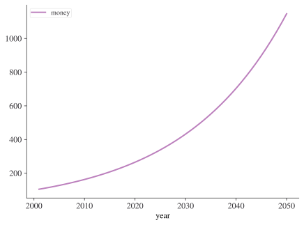
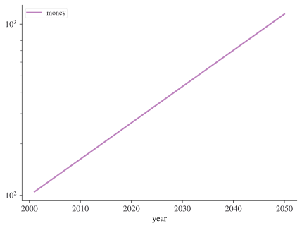
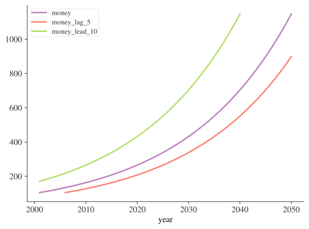
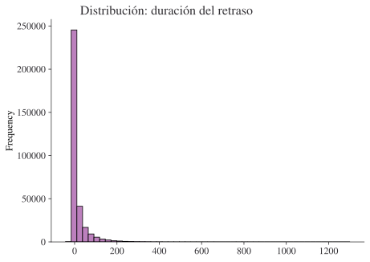
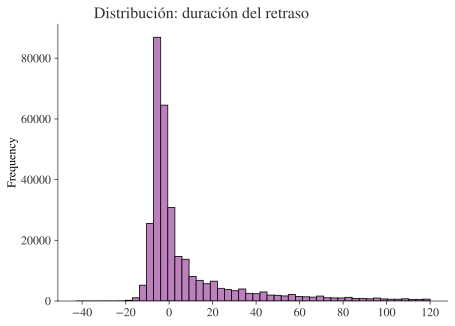

import pandas as pd
url = "https://raw.githubusercontent.com/byuidatascience/data4python4ds/master/data-raw/flights/flights.csv"
flights = pd.read_csv(url)Números
Introducción
En este capítulo aprenderás herramientas útiles para crear y manipular vectores numéricos. Empezaremos viendo con un poco más de detalle .count() antes de adentrarnos en varias transformaciones numéricas. Después aprenderás transformaciones más generales que se pueden aplicar a otros tipos de columna, pero que se usan a menudo con columnas numéricas. Luego conocerás algunos resúmenes útiles más.
Requisitos previos
Este capítulo usa sobre todo funciones de pandas, que probablemente ya tengas instalado, aunque puedes instalarlo con uv add pandas en la terminal. Usaremos ejemplos reales de nycflights13, así como ejemplos de juguete hechos con datos ficticios.
Primero carguemos los datos de vuelos de NYC
Conteos
Es sorprendente cuánta ciencia de datos puedes hacer solo con conteos y un poco de aritmética básica, por eso pandas se esfuerza en que contar sea lo más fácil posible con .count() y .value_counts(). El primero simplemente da un conteo directo de todos los elementos que no son NA:
flights["dest"].count()np.int64(336776)El segundo da un conteo desglosado por tipo:
flights["dest"].value_counts()dest
ORD 17283
ATL 17215
LAX 16174
BOS 15508
MCO 14082
...
MTJ 15
SBN 10
ANC 8
LEX 1
LGA 1
Name: count, Length: 105, dtype: int64Esto se ordena automáticamente empezando por la categoría más común. Puedes hacer el mismo cálculo “a mano” con group_by(), agg() y luego la función de conteo. Esto es útil porque te permite calcular otros resúmenes al mismo tiempo:
(
flights.groupby(["dest"])
.agg(
mean_delay=("dep_delay", "mean"),
count_flights=("dest", "count"),
)
.sort_values(by="count_flights", ascending=False)
)| mean_delay | count_flights | |
|---|---|---|
| dest | ||
| ORD | 13.570484 | 17283 |
| ATL | 12.509824 | 17215 |
| LAX | 9.401344 | 16174 |
| BOS | 8.730613 | 15508 |
| MCO | 11.275998 | 14082 |
| ... | ... | ... |
| MTJ | 17.642857 | 15 |
| SBN | 21.100000 | 10 |
| ANC | 12.875000 | 8 |
| LGA | NaN | 1 |
| LEX | -9.000000 | 1 |
105 rows × 2 columns
Ten en cuenta que un conteo ponderado no es más que una suma. Por ejemplo, podrías “contar” el número de millas que voló cada avión:
(flights.groupby("tailnum").agg(miles=("distance", "sum")))| miles | |
|---|---|
| tailnum | |
| D942DN | 3418 |
| N0EGMQ | 250866 |
| N10156 | 115966 |
| N102UW | 25722 |
| N103US | 24619 |
| ... | ... |
| N997DL | 54669 |
| N998AT | 15432 |
| N998DL | 66052 |
| N999DN | 54623 |
| N9EAMQ | 167317 |
4043 rows × 1 columns
Puedes contar los valores faltantes combinando sum() e isnull(). En el dataset de vuelos, esto representa los vuelos cancelados. Ten en cuenta que, como no existe un nombre sencillo en forma de string para aplicar .isnull() seguido de .sum() (a diferencia de ejecutar solo sum(), que vendría dado por el string “sum”), necesitamos usar una función lambda a continuación:
(flights.groupby("dest").agg(n_cancelled=("dep_time", lambda x: x.isnull().sum())))| n_cancelled | |
|---|---|
| dest | |
| ABQ | 0 |
| ACK | 0 |
| ALB | 20 |
| ANC | 0 |
| ATL | 317 |
| ... | ... |
| TPA | 59 |
| TUL | 16 |
| TVC | 5 |
| TYS | 52 |
| XNA | 25 |
105 rows × 1 columns
Transformaciones numéricas
Las funciones de transformación producen una salida de la misma longitud que la entrada. La gran mayoría de las funciones de transformación vienen integradas en Python o en el paquete numérico numpy. No es práctico enumerar todas las transformaciones numéricas posibles, así que esta sección mostrará las más útiles.
La aritmética básica se realiza con + (suma), - (resta), * (multiplicación), / (división), ** (potencias), % (módulo) y @ (producto tensorial). La mayoría de estas funciones no necesitan mucha explicación porque ya te resultarán familiares (y puedes consultar las demás cuando las necesites).
Cuando tienes dos columnas numéricas de igual longitud y las sumas o restas, es bastante obvio lo que va a pasar. Pero sí debemos hablar de qué ocurre cuando interviene una variable que no es tan larga como la columna. Esto es importante para operaciones como flights.assign(air_time = air_time / 60), porque hay 336.776 números a la izquierda de / pero solo uno a la derecha. En este caso, pandas entenderá que quieres dividir todos los valores de air time entre 60. A esto a veces se le llama ‘broadcasting’. A continuación hay un diagrama que intenta explicar lo que sucede:

Puedes saber mucho más sobre broadcasting en la documentación de numpy. pandas está construido sobre numpy y hereda parte de su funcionalidad.
Al operar con dos columnas, pandas compara sus formas elemento a elemento. Dos columnas son compatibles cuando son iguales o cuando una de ellas es un escalar. Si no se cumplen estas condiciones, obtendrás un error.
Mínimo y máximo
Las funciones aritméticas hacen lo que esperarías.
flights["distance"].max()np.int64(4983)A veces querrás ver el valor máximo o mínimo a lo largo de filas o columnas. Como suele ocurrir con pandas, puedes indicar si una función se aplica a filas o columnas pasándole axis=0 (índice) o axis=1 (columnas). La designación del eje puede ser confusa: recuerda que estás indicando sobre qué dimensión quieres agregar, y te queda la otra dimensión. Así que si queremos encontrar el mínimo en cada fila, agregamos / colapsamos las columnas, por lo que necesitamos pasar axis=1.
df = pd.DataFrame({"x": [1, 5, 7], "y": [3, 2, pd.NA]})
df| x | y | |
|---|---|---|
| 0 | 1 | 3 |
| 1 | 5 | 2 |
| 2 | 7 | <NA> |
Ahora busquemos el mínimo por fila:
df.min(axis=1)0 1
1 2
2 7
dtype: objectAritmética modular
La aritmética modular es el nombre técnico del tipo de matemáticas que haces con números enteros, es decir, la división que da como resultado un número entero y un resto. En Python, // hace la división entera y % calcula el resto:
print([x for x in range(1, 11)])
print("divided by 3 gives")
print("remainder:")
print([x % 3 for x in range(1, 11)])
print("divisions:")
print([x // 3 for x in range(1, 11)])[1, 2, 3, 4, 5, 6, 7, 8, 9, 10]
divided by 3 gives
remainder:
[1, 2, 0, 1, 2, 0, 1, 2, 0, 1]
divisions:
[0, 0, 1, 1, 1, 2, 2, 2, 3, 3]La aritmética modular resulta práctica para el dataset de vuelos, porque podemos usarla para descomponer la variable sched_dep_time en hour y minute:
flights.assign(
hour=lambda x: x["sched_dep_time"] // 100,
minute=lambda x: x["sched_dep_time"] % 100,
)| year | month | day | dep_time | sched_dep_time | dep_delay | arr_time | sched_arr_time | arr_delay | carrier | flight | tailnum | origin | dest | air_time | distance | hour | minute | time_hour | |
|---|---|---|---|---|---|---|---|---|---|---|---|---|---|---|---|---|---|---|---|
| 0 | 2013 | 1 | 1 | 517.0 | 515 | 2.0 | 830.0 | 819 | 11.0 | UA | 1545 | N14228 | EWR | IAH | 227.0 | 1400 | 5 | 15 | 2013-01-01T10:00:00Z |
| 1 | 2013 | 1 | 1 | 533.0 | 529 | 4.0 | 850.0 | 830 | 20.0 | UA | 1714 | N24211 | LGA | IAH | 227.0 | 1416 | 5 | 29 | 2013-01-01T10:00:00Z |
| 2 | 2013 | 1 | 1 | 542.0 | 540 | 2.0 | 923.0 | 850 | 33.0 | AA | 1141 | N619AA | JFK | MIA | 160.0 | 1089 | 5 | 40 | 2013-01-01T10:00:00Z |
| 3 | 2013 | 1 | 1 | 544.0 | 545 | -1.0 | 1004.0 | 1022 | -18.0 | B6 | 725 | N804JB | JFK | BQN | 183.0 | 1576 | 5 | 45 | 2013-01-01T10:00:00Z |
| 4 | 2013 | 1 | 1 | 554.0 | 600 | -6.0 | 812.0 | 837 | -25.0 | DL | 461 | N668DN | LGA | ATL | 116.0 | 762 | 6 | 0 | 2013-01-01T11:00:00Z |
| ... | ... | ... | ... | ... | ... | ... | ... | ... | ... | ... | ... | ... | ... | ... | ... | ... | ... | ... | ... |
| 336771 | 2013 | 9 | 30 | NaN | 1455 | NaN | NaN | 1634 | NaN | 9E | 3393 | NaN | JFK | DCA | NaN | 213 | 14 | 55 | 2013-09-30T18:00:00Z |
| 336772 | 2013 | 9 | 30 | NaN | 2200 | NaN | NaN | 2312 | NaN | 9E | 3525 | NaN | LGA | SYR | NaN | 198 | 22 | 0 | 2013-10-01T02:00:00Z |
| 336773 | 2013 | 9 | 30 | NaN | 1210 | NaN | NaN | 1330 | NaN | MQ | 3461 | N535MQ | LGA | BNA | NaN | 764 | 12 | 10 | 2013-09-30T16:00:00Z |
| 336774 | 2013 | 9 | 30 | NaN | 1159 | NaN | NaN | 1344 | NaN | MQ | 3572 | N511MQ | LGA | CLE | NaN | 419 | 11 | 59 | 2013-09-30T15:00:00Z |
| 336775 | 2013 | 9 | 30 | NaN | 840 | NaN | NaN | 1020 | NaN | MQ | 3531 | N839MQ | LGA | RDU | NaN | 431 | 8 | 40 | 2013-09-30T12:00:00Z |
336776 rows × 19 columns
Logaritmos
Los logaritmos son una transformación increíblemente útil para tratar datos que abarcan varios órdenes de magnitud. También convierten el crecimiento exponencial en crecimiento lineal. Por ejemplo, piensa en el interés compuesto: la cantidad de dinero que tienes en year + 1 es la cantidad que tenías en year multiplicada por la tasa de interés. Eso da una fórmula como money = starting * interest ** year:
import numpy as np
starting = 100
interest = 1.05
money = pd.DataFrame(
{"year": 2000 + np.arange(1, 51), "money": starting * interest ** np.arange(1, 51)}
)
money.head()| year | money | |
|---|---|---|
| 0 | 2001 | 105.000000 |
| 1 | 2002 | 110.250000 |
| 2 | 2003 | 115.762500 |
| 3 | 2004 | 121.550625 |
| 4 | 2005 | 127.628156 |
Si graficas estos datos, obtendrás una curva exponencial:
money.plot(x="year", y="money");
Aplicar una transformación logarítmica al eje y da una línea recta:
money.plot(x="year", y="money", logy=True);
Es una línea recta porque log(money) = log(starting) + n * log(interest) sigue el patrón de una recta, y = m * x + b. Es un patrón útil: si ves una línea (aproximadamente) recta tras aplicar el logaritmo al eje y, sabes que hay un crecimiento exponencial subyacente.
Si vas a aplicar una transformación logarítmica a tus datos, numpy te ofrece muchos logaritmos, pero hay tres que usarás con frecuencia: suponiendo que lo hayas importado con import numpy as np, tienes np.log() (el logaritmo natural, base e), np.log2() (base 2) y np.log10() (base 10).
La inversa de log() es np.exp(); para calcular la inversa de np.log2() o np.log10() tendrás que usar 2** o 10**.
Redondeo
Para redondear a un número concreto de decimales, usa .round(n), donde n es el número de decimales al que quieres redondear.
money.head().round(2)| year | money | |
|---|---|---|
| 0 | 2001 | 105.00 |
| 1 | 2002 | 110.25 |
| 2 | 2003 | 115.76 |
| 3 | 2004 | 121.55 |
| 4 | 2005 | 127.63 |
Esto también se puede aplicar a columnas individuales o de forma diferenciada a cada columna mediante un diccionario:
money.head().round({"year": 0, "money": 1})| year | money | |
|---|---|---|
| 0 | 2001 | 105.0 |
| 1 | 2002 | 110.2 |
| 2 | 2003 | 115.8 |
| 3 | 2004 | 121.6 |
| 4 | 2005 | 127.6 |
.round(n) redondea al 10**(-n) más cercano, así que n = 2 redondeará al 0,01 más cercano. Esta definición es útil porque implica que .round(-2) redondeará a la centena más cercana, que es justo lo que hace:
money.tail().round({"year": 0, "money": -2})| year | money | |
|---|---|---|
| 45 | 2046 | 900.0 |
| 46 | 2047 | 1000.0 |
| 47 | 2048 | 1000.0 |
| 48 | 2049 | 1100.0 |
| 49 | 2050 | 1100.0 |
A veces querrás redondear según cifras significativas en lugar de decimales. No hay una forma realmente sencilla de hacerlo, pero puedes definir una función personalizada. Aquí tienes un ejemplo de redondeo a 2 cifras significativas (cambia el 2 de abajo para redondear a otro número de cifras significativas):
money["money"].head().apply(lambda x: float(f'{float(f"{x:.2g}"):g}'))0 100.0
1 110.0
2 120.0
3 120.0
4 130.0
Name: money, dtype: float64Si tienes un array o una lista de números fuera de un dataframe, puedes usar la función de numpy
np.round([1.5, 2.5, 1.4])array([2., 2., 1.])numpy también tiene los métodos .floor() y .ceil()
real_nums = 100 * np.random.random(size=10)
real_numsarray([47.02726759, 72.61069036, 26.30795829, 47.23210581, 59.72202097,
86.10305252, 4.17188594, 15.77747274, 48.68180021, 8.32750531])np.ceil(real_nums)array([48., 73., 27., 48., 60., 87., 5., 16., 49., 9.])np.floor(real_nums)array([47., 72., 26., 47., 59., 86., 4., 15., 48., 8.])Recuerda que siempre puedes aplicar funciones de numpy a columnas de un dataframe de pandas así:
money["money"].head().apply(np.ceil)0 105.0
1 111.0
2 116.0
3 122.0
4 128.0
Name: money, dtype: float64Agregados acumulativos y móviles
pandas tiene varias funciones acumulativas, como .cumsum(), .cummax() y .cummin(), y .cumprod().
money["money"].tail().cumsum()45 943.425818
46 1934.022928
47 2974.149892
48 4066.283205
49 5213.023184
Name: money, dtype: float64Como siempre, esto también se puede aplicar a lo largo de las filas pasando axis=1.
Transformaciones generales
Las siguientes secciones describen algunas transformaciones generales que se usan a menudo con vectores numéricos, pero que se pueden aplicar a todos los demás tipos de columna.
Ranking
La función de ranking de pandas es .rank(). Volvamos a los datos que creamos antes y asignémosles un ranking:
df| x | y | |
|---|---|---|
| 0 | 1 | 3 |
| 1 | 5 | 2 |
| 2 | 7 | <NA> |
df.rank()| x | y | |
|---|---|---|
| 0 | 1.0 | 2.0 |
| 1 | 2.0 | 1.0 |
| 2 | 3.0 | NaN |
¡Por supuesto, aquí no hay cambios porque los elementos ya estaban ordenados! También podemos obtener un ranking porcentual pasando el argumento con nombre pct=True.
df.rank(pct=True)| x | y | |
|---|---|---|
| 0 | 0.333333 | 1.0 |
| 1 | 0.666667 | 0.5 |
| 2 | 1.000000 | NaN |
Desfases y desplazamientos
Los desfases te permiten ‘deslizar’ columnas hacia arriba o hacia abajo respecto de su posición original, es decir, desplazar su ubicación respecto del índice. La función que lo hace se llama shift() y produce adelantos (leads) o retardos (lags) según uses valores positivos o negativos, respectivamente. Recuerda que un adelanto desplazará el patrón de los datos hacia la izquierda cuando se grafique frente al índice, mientras que un retardo desplazará los patrones hacia la derecha. Los adelantos y retardos son especialmente útiles para datos de series temporales (que aún no hemos visto).
Veamos un ejemplo de desfases con el dataframe money de antes:
money["money_lag_5"] = money["money"].shift(5)
money["money_lead_10"] = money["money"].shift(-10)
money.set_index("year").plot();
Ejercicios
Encuentra los 10 vuelos con más retraso usando una función de ranking.
¿Qué avión (
"tailnum") tiene el peor historial de puntualidad?¿A qué hora del día deberías volar si quieres evitar los retrasos lo máximo posible?
Para cada destino, calcula el total de minutos de retraso. Para cada vuelo, calcula la proporción que representa del retraso total de su destino.
Los retrasos suelen estar correlacionados en el tiempo: incluso una vez resuelto el problema que causó el retraso inicial, los vuelos posteriores se retrasan para que puedan salir los anteriores. Usando
.shift(), explora cómo se relaciona el retraso medio de los vuelos de una hora con el retraso medio de la hora anterior.Observa cada destino. ¿Puedes encontrar vuelos sospechosamente rápidos? (es decir, vuelos que representen un posible error de captura de datos). Calcula el tiempo en el aire de un vuelo en relación con el vuelo más corto a ese destino. ¿Qué vuelos sufrieron más retraso en el aire?
Encuentra todos los destinos a los que vuelan al menos dos aerolíneas. Usa esos destinos para elaborar una clasificación relativa de las aerolíneas según su desempeño en un mismo destino.
Más estadísticas descriptivas útiles
Ya hemos visto lo útiles que pueden ser .mean(), .count() y .value_counts() para el análisis. Sin embargo, pandas tiene muchas más funciones integradas de estadísticas descriptivas. Entre ellas están .median() (puede resultarte interesante comparar la media con la mediana al observar el retraso de salida por hora en los datos de vuelos), .mode(), .min() y .max().
La función .quantile proporciona una clase de estadísticas descriptivas útiles; .quantile(0.5) equivale a median. El cuantil al x% es el valor por debajo del cual se encuentra el x% de los valores. (Ten en cuenta que, con esta definición, .quantile(1) será lo mismo que .max()). Veamos un ejemplo con el percentil 25.
money["money"].quantile(0.25)np.float64(190.92197566022773)A veces no quieres solo un percentil, sino varios. pandas lo hace muy fácil al permitirte pasar una lista de cuantiles:
money["money"].quantile([0, 0.25, 0.5, 0.75])0.00 105.000000
0.25 190.921976
0.50 347.101381
0.75 630.945970
Name: money, dtype: float64Dispersión
A veces no te interesa tanto dónde se concentra la mayor parte de los datos, sino cómo se dispersan. Dos medidas de uso común son la desviación estándar, .std(), y el rango intercuartílico, que puedes calcular a partir de los cuantiles correspondientes, es decir, es el cuantil al 75% menos el cuantil al 25%, y te da el rango que contiene el 50% central de los datos.
Podemos usar esto para revelar una pequeña rareza en los datos de vuelos. Cabría esperar que la dispersión de la distancia entre origen y destino fuera cero, ya que los aeropuertos siempre están en el mismo lugar. Pero el código siguiente da la impresión de que un aeropuerto, EGE, podría haberse movido.
(
flights.groupby(["origin", "dest"])
.agg(
distance_sd=("distance", lambda x: x.quantile(0.75) - x.quantile(0.25)),
count=("distance", "count"),
)
.query("distance_sd > 0")
)| distance_sd | count | ||
|---|---|---|---|
| origin | dest | ||
| EWR | EGE | 1.0 | 110 |
| JFK | EGE | 1.0 | 103 |
Distribuciones
Conviene recordar que todas las estadísticas descriptivas anteriores son una forma de reducir la distribución a un único número. Esto significa que son fundamentalmente reductivas y, si eliges la medida equivocada, puedes pasar por alto fácilmente diferencias importantes entre grupos. Por eso siempre es buena idea visualizar la distribución de los valores además de usar estadísticas agregadas.
El gráfico siguiente muestra la distribución general de los retrasos de salida. La distribución es tan asimétrica que tenemos que acercarnos para ver la mayor parte de los datos. Esto sugiere que la media probablemente no sea un buen resumen y que quizá prefiramos la mediana.
flights["dep_delay"].plot.hist(bins=50, title=" Distribution: length of delay");
flights.query("dep_delay <= 120")["dep_delay"].plot.hist(
bins=50, title=" Distribution: length of delay"
);
Dos histogramas de "dep_delay". En el primero, es muy difícil ver algún patrón, salvo que hay un pico muy grande alrededor de cero, las barras disminuyen rápidamente de altura y, en la mayor parte del gráfico, no se ve ninguna barra porque son demasiado bajas. En el segundo, donde hemos descartado los retrasos de más de dos horas, vemos que el pico se produce ligeramente por debajo de cero (es decir, la mayoría de los vuelos salen un par de minutos antes), pero aun así hay un descenso muy pronunciado después.
No tengas miedo de explorar tus propios resúmenes personalizados, adaptados específicamente a los datos con los que trabajas. En este caso, eso podría significar resumir por separado los vuelos que salieron antes y los que salieron tarde o, dado que los valores son tan asimétricos, podrías probar una transformación logarítmica. Por último, no olvides que siempre es buena idea incluir el número de observaciones de cada grupo al crear resúmenes.
Ejercicios
Piensa en al menos 5 formas diferentes de evaluar las características típicas de retraso de un grupo de vuelos. Considera los siguientes escenarios:
- Un vuelo llega 15 minutos antes el 50% de las veces y 15 minutos tarde el 50% de las veces.
- Un vuelo siempre llega 10 minutos tarde.
- Un vuelo llega 30 minutos antes el 50% de las veces y 30 minutos tarde el 50% de las veces.
- El 99% de las veces un vuelo llega a tiempo. El 1% de las veces llega 2 horas tarde.
¿Qué crees que es más importante: el retraso de llegada o el retraso de salida?
¿Qué destinos muestran la mayor variación en la velocidad de vuelo?
Crea un gráfico para explorar más a fondo las aventuras de EGE. ¿Encuentras alguna evidencia de que el aeropuerto cambió de ubicación?